par(mfrow = c(1, 2))
matplot(day, temp, type = "l", lty = 1, col = adjustcolor("#2E5BBA", .5), xlab = "day", ylab = "deg C", main = "Temperature")
lines(day, temp[, "Vancouver"], lwd = 3, col = "red")
matplot(day, precip, type = "l", lty = 1, col = adjustcolor("#2E5BBA", .5), xlab = "day", ylab = "mm", main = "Precipitation")
lines(day, precip[, "Vancouver"], lwd = 3, col = "red")A Journey Through Functional Data with R 〰️
MATH 4750 / MSSC 5750 Computational Statistics
Dr. Mehdi Maadooliat
Marquette University
MATH 4750 - Spring 2027
A Journey Through Functional Data with R
What is functional data?
Representing functional data: basis expansions (monomial, Fourier, splines)
Smoothing penalties and choosing \(\lambda\)
Bivariate bases: tensor products
Dimension reduction: SVD, PCA, ICA, and functional PCA
What Is Functional Data?
Functional Data: Repeated Measures of a Smooth Process
- Data are measurements of smooth processes over a continuum (usually time).
- We do not want parametric assumptions about those processes.
- Often multiple curves of the same process; we describe the variation between curves.
- Frequently high resolution and low noise.
“Functional data is multivariate data with an ordering on the dimensions.” (Müller, 2006)
\[ y_{ij} = x_i(t_{ij}) + \epsilon_{ij},\qquad x_i(t)\ \text{smooth}. \]
Functional data = the functions \(x_i(t)\).
Applications: medical monitoring (EEG, ECG, fMRI), biology (growth curves), environmental monitoring (weather, pollution), traffic.
Canadian Weather Data
Average daily temperature and precipitation at 35 Canadian weather stations (classical and much used).
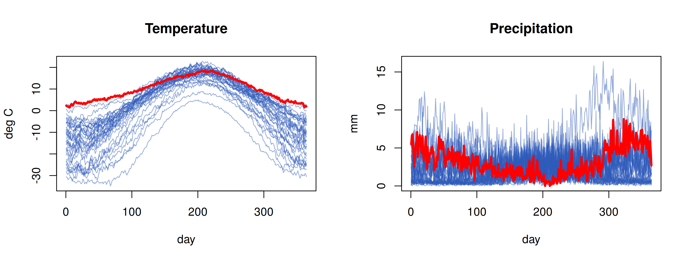
Weather in Vancouver and the Challenges
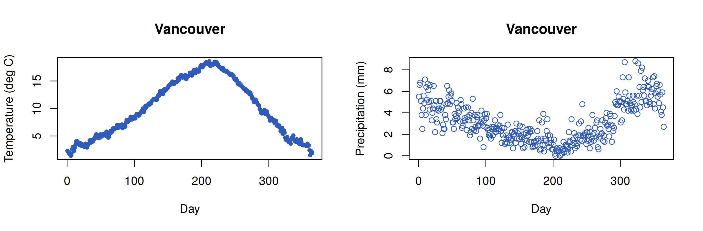
Challenges: estimating functions from noisy discrete observations; numerical representation of infinite-dimensional objects; representing variation in infinite dimensions; relationships between functional objects; \(n < p = \infty\) (we need smoothness); measures of variation in estimates.
Representing Functional Data
From Discrete to Functional Data
Two problems, two methods:
- Represent non-parametric continuous-time functions: basis expansions \[ x(t) = \sum_{k=1}^K c_k\phi_k(t) = \boldsymbol\Phi(t)\mathbf c,\quad \phi_k \text{ pre-defined}. \]
- Reduce noise in measurements: smoothing penalties \[ \hat{\mathbf c} = \mathop{\mathrm{arg\,min}}_{\mathbf c}\sum_{i=1}^n\big(y_i - x(t_i)\big)^2 + \lambda\int[Lx(t)]^2dt, \] where \(Lx\) measures the “roughness” of \(x\) (e.g. \(Lx = x''\)) and \(\lambda\) trades fit for smoothness.
Basis Expansions Are Just Regression
From multiple regression \(y_i = \beta_0 + \beta_1x_{1i} + \cdots + \epsilon_i\), or with curvature \(y_i = \beta_0 + \beta_1t_i + \beta_2t_i^2 + \cdots\). For one record, \(y_i = x(t_i) + \epsilon_i\) with \(x(t) = \boldsymbol\Phi(t)\mathbf c\):
\[ \hat{\mathbf c} = (\boldsymbol\Phi^\text{T}\boldsymbol\Phi)^{-1}\boldsymbol\Phi^\text{T}\mathbf{y},\qquad \hat\mathbf{y}= \mathbf{S}\mathbf{y},\ \ \mathbf{S}= \boldsymbol\Phi(\boldsymbol\Phi^\text{T}\boldsymbol\Phi)^{-1}\boldsymbol\Phi^\text{T}. \]
The Monomial Basis and Its Problems
\(\boldsymbol\Phi(t) = (1, t, t^2, t^3, \dots)\)
[1] 160809[1] 18.97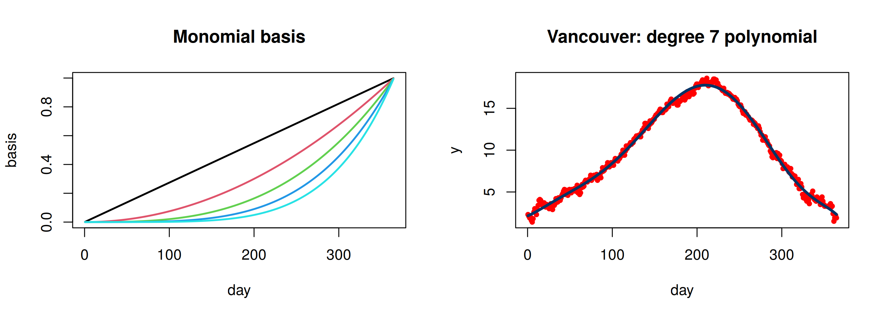
- Monomial fits have derivatives that behave badly (the second derivative explodes at the ends), and the basis is nearly collinear.
The Fourier Basis
\[ 1,\ \sin(\omega t),\ \cos(\omega t),\ \sin(2\omega t),\ \cos(2\omega t),\ \dots,\qquad \omega = 2\pi/P. \]
fourier_basis <- function(t, K, P = 365) {
B <- matrix(1, length(t), 1)
for (k in 1:K) B <- cbind(B, sin(2 * pi * k * t / P), cos(2 * pi * k * t / P))
B
}
Phi_f <- fourier_basis(day, 3)
fit_f <- lm.fit(Phi_f, y)
par(mfrow = c(1, 2))
matplot(day, Phi_f[, 2:5], type = "l", lty = c(1, 2, 1, 2), col = c(2, 4, 2, 4), lwd = 2, ylab = "", main = "Fourier basis (k = 1, 2)")
plot(day, y, pch = 20, col = "red", main = "Vancouver: 7 Fourier functions"); lines(day, Phi_f %*% fit_f$coefficients, lwd = 3, col = "#003366")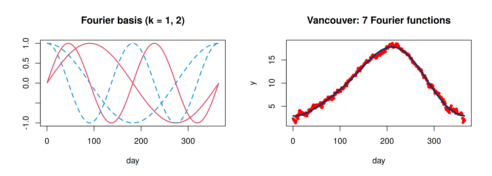
- Advantages: excellent computational properties (orthogonal on equally spaced points; FFT), natural for periodic data. But representations are periodic: a problem if the data are not.
Spline Bases
Truncated power basis of degree \(d\) with knots \(\kappa_1,\dots,\kappa_K\): \[ 1, t, \dots, t^d, (t-\kappa_1)_+^d, \dots, (t-\kappa_K)_+^d. \] Piecewise polynomials, joined smoothly (\(d-1\) continuous derivatives) at the knots. B-splines span the same space with a well-conditioned, compactly supported basis.
library(splines)
kn <- seq(0, 365, length = 9)[-c(1, 9)]
Phi_b <- bs(day, knots = kn, degree = 3, intercept = TRUE)
fit_b <- lm.fit(Phi_b, y)
par(mfrow = c(1, 2))
matplot(day, Phi_b, type = "l", lty = 1, lwd = 2, ylab = "", main = "Cubic B-spline basis"); abline(v = kn, lty = 3)
plot(day, y, pch = 20, col = "red", main = "Vancouver: B-spline fit"); lines(day, Phi_b %*% fit_b$coefficients, lwd = 3, col = "#003366")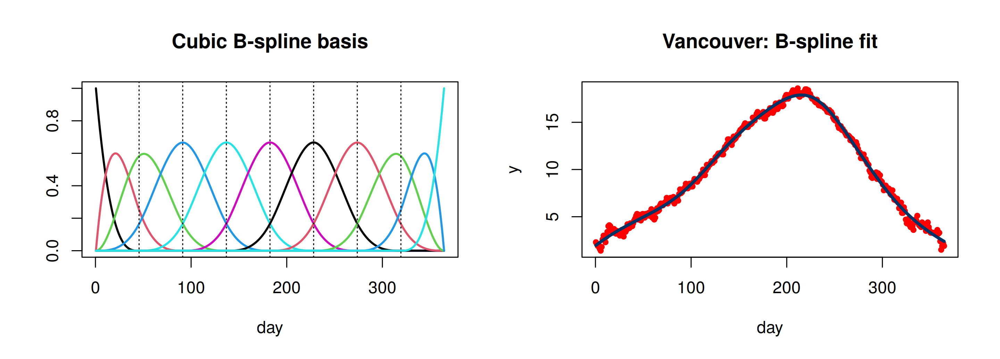
Smoothing Penalties: Roughness and \(\lambda\)
Use many basis functions, then penalize roughness. With a B-spline basis, Eilers and Marx’s P-splines replace \(\int[x'']^2\) by a difference penalty on the coefficients:
\[ \hat{\mathbf c}_\lambda = (\boldsymbol\Phi^\text{T}\boldsymbol\Phi + \lambda\mathbf{D}^\text{T}\mathbf{D})^{-1}\boldsymbol\Phi^\text{T}\mathbf{y},\qquad \mathbf{D}= \text{second-difference matrix}. \]
yp <- precip[, "Vancouver"]
Phi <- bs(day, df = 40, degree = 3, intercept = TRUE); D <- diff(diag(ncol(Phi)), differences = 2)
psmooth <- function(lambda) { S <- Phi %*% solve(crossprod(Phi) + lambda * crossprod(D), t(Phi)); list(fit = S %*% yp, df = sum(diag(S))) }
plot(day, yp, col = "gray50", main = "Vancouver precipitation: P-spline smooths", xlab = "day", ylab = "mm")
cols <- c("#C0392B", "#003366", "#27AE60")
for (k in 1:3) lines(day, psmooth(c(0.1, 100, 1e5)[k])$fit, lwd = 3, col = cols[k])
legend("top", paste("lambda =", c(0.1, 100, 1e5)), col = cols, lwd = 3, bty = "n", horiz = TRUE)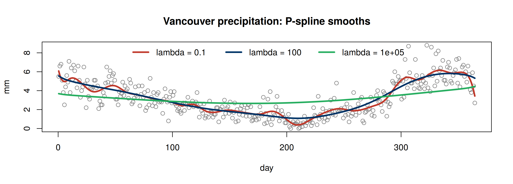
Choosing \(\lambda\): Generalized Cross-Validation
\[ \text{GCV}(\lambda) = \frac{n\,\text{RSS}(\lambda)}{\big(n - \text{tr}\,\mathbf{S}_\lambda\big)^2} \]
lams <- 10^seq(-2, 6, length = 40)
gcv <- sapply(lams, function(l) { s <- psmooth(l); 365 * sum((yp - s$fit)^2) / (365 - s$df)^2 })
par(mfrow = c(1, 2))
plot(lams, gcv, log = "x", type = "l", lwd = 3, xlab = expression(lambda), ylab = "GCV"); abline(v = lams[which.min(gcv)], lty = 2)
best <- psmooth(lams[which.min(gcv)])
plot(day, yp, col = "gray50", main = sprintf("GCV choice: df = %.1f", best$df)); lines(day, best$fit, lwd = 3, col = "#003366")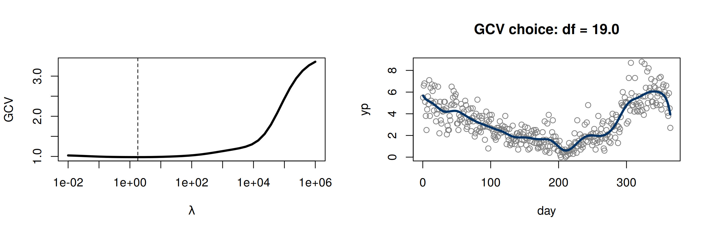
- The same idea as ridge regression (deck 04) with a structured penalty; LOOCV shortcut via the smoother matrix (deck 14).
Bivariate Case: Tensor Product Bases
If \(\{\phi_i(x)\}_{i=1}^N\) and \(\{\psi_j(y)\}_{j=1}^M\) are bases in each dimension, the \(NM\) tensor product functions \(\phi_i(x)\psi_j(y)\) form a basis for surfaces: \(\bB = \bB_x\otimes\bB_y\).
zv <- volcano; xg <- seq(0, 1, length = nrow(zv)); yg <- seq(0, 1, length = ncol(zv))
Bx <- bs(xg, df = 10, intercept = TRUE); By <- bs(yg, df = 8, intercept = TRUE)
B <- kronecker(By, Bx) # (87*61) x (10*8) tensor product design
cf <- qr.coef(qr(B), as.vector(zv)); zhat <- matrix(B %*% cf, nrow(zv))
par(mfrow = c(1, 2), mar = c(1, 1, 2, 1))
persp(xg, yg, zv, theta = 130, phi = 30, col = "#FFCC00", border = NA, shade = .5, main = "volcano (5307 values)")
persp(xg, yg, zhat, theta = 130, phi = 30, col = "#88A0C8", border = NA, shade = .5, main = "80 tensor B-spline coefficients")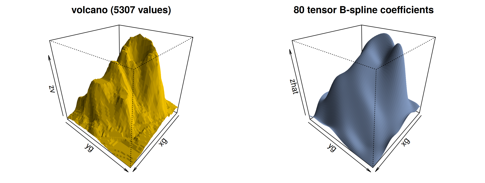
- Irregular domains: bivariate splines on triangulations (smoothness conditions across triangle edges).
Dimension Reduction
Singular Value Decomposition
\[ \mathbf{X}_{n\times m} = \mathbf{U}\mathbf{S}\mathbf{V}^\text{T},\qquad \mathbf{U}^\text{T}\mathbf{U}= \mathbf{I},\ \mathbf{V}^\text{T}\mathbf{V}= \mathbf{I},\ \mathbf{S}= \text{diag}(s_1\ge s_2\ge\cdots). \]
Truncated SVD: \(\mathbf{X}_k = \mathbf{U}_k\mathbf{S}_k\mathbf{V}_k^\text{T}\) is the closest rank-\(k\) matrix to \(\mathbf{X}\) (Eckart-Young).
sv <- svd(volcano)
par(mfrow = c(1, 4), mar = c(1, 1, 2, 1))
for (k in c(1, 2, 5, 20)) {
Xk <- sv$u[, 1:k, drop = FALSE] %*% diag(sv$d[1:k], k) %*% t(sv$v[, 1:k, drop = FALSE])
image(Xk, axes = FALSE, col = terrain.colors(60), main = sprintf("rank %d (%.1f%% energy)", k, 100 * sum(sv$d[1:k]^2) / sum(sv$d^2)))
}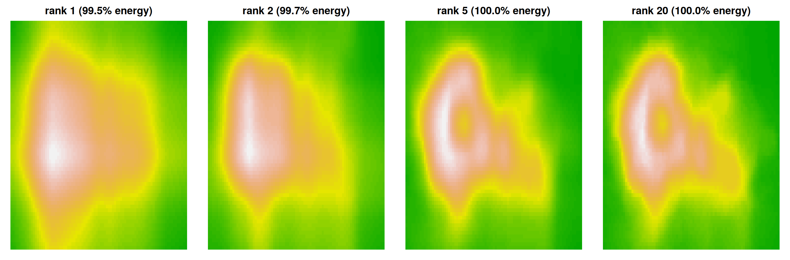
PCA, Its Geometry, and the SVD Connection
- Find the direction \(\mathbf{v}\) with the greatest variation: \(\mathop{\mathrm{arg\,max}}_{\|\mathbf{v}\|=1}\mathbf{v}^\text{T}\mathbf{X}^\text{T}\mathbf{X}\mathbf{v}= \mathop{\mathrm{arg\,max}}\|\mathbf{X}\mathbf{v}\|^2\) (centered \(\mathbf{X}\)): the leading eigenvector of \(\mathbf{X}^\text{T}\mathbf{X}\).
- From \(\mathbf{X}= \mathbf{U}\mathbf{S}\mathbf{V}^\text{T}\): \(\ \mathbf{X}^\text{T}\mathbf{X}= \mathbf{V}\mathbf{S}^2\mathbf{V}^\text{T}\), \(\ \mathbf{X}\mathbf{X}^\text{T}= \mathbf{U}\mathbf{S}^2\mathbf{U}^\text{T}\), and \(\mathbf{U}= \mathbf{X}\mathbf{V}\mathbf{S}^{-1}\).
max_eigenvalue_diff PC_variance_share1 PC_variance_share2 PC_variance_share3
2.328e-10 8.800e-01 8.500e-02 2.100e-02 Functional PCA of Canadian Temperatures
Treat each station’s curve as one observation; the right singular vectors are the eigenfunctions \(\xi_k(t)\).
par(mfrow = c(1, 2))
mu <- colMeans(t(temp))
matplot(day, s$v[, 1:3] * -1, type = "l", lty = 1, lwd = 3, col = c("#003366", "#C0392B", "#27AE60"),
ylab = expression(xi[k](t)), main = "First three eigenfunctions")
legend("bottom", sprintf("PC%d (%.1f%%)", 1:3, 100 * s$d[1:3]^2 / sum(s$d^2)), col = c("#003366", "#C0392B", "#27AE60"), lwd = 3, bty = "n")
plot(day, mu, type = "l", lwd = 3, ylim = c(-35, 25), ylab = "deg C", main = "Mean +/- 2 sd along PC1")
lines(day, mu + 2 * s$d[1] / sqrt(34) * s$v[, 1], lty = 2, lwd = 2); lines(day, mu - 2 * s$d[1] / sqrt(34) * s$v[, 1], lty = 3, lwd = 2)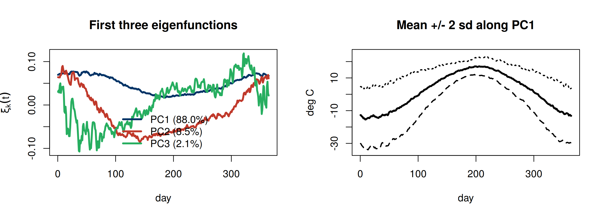
- PC1 is roughly “overall warmth” (more variation in winter); PC2 contrasts winter and summer (continental vs maritime climate).
Station Scores
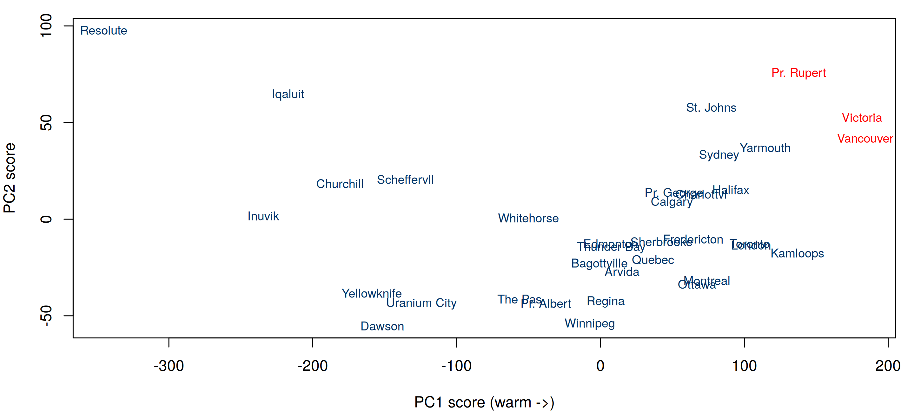
FPCA with Smoothing and Missing Data
- Raw SVD eigenfunctions are noisy when curves are noisy or sparsely observed.
- Regularized FPCA (Huang, Shen and Buja, 2008): penalized rank-one approximation \[ \min_{\mathbf{u},\mathbf{v}}\ \|\mathbf{X}- \mathbf{u}\mathbf{v}^\text{T}\|_F^2 + \lambda\,\mathbf{u}^\text{T}\mathbf{u}\ \mathbf{v}^\text{T}\boldsymbol\Omega\mathbf{v}, \] solved by alternating ridge-type updates; handles missing entries by fitting only observed cells.
- Integrating data transformation, smoothing and missing data: https://fpca.shinyapps.io/fpca/ and the course code in
FDAiR/shiny/.
Independent Component Analysis (ICA) vs. PCA
| PCA | ICA | |
|---|---|---|
| Model | \(\mathbf{X}= \mathbf{U}\mathbf{S}\), \(\mathbf{U}^\text{T}\mathbf{U}= \mathbf{I}\) | \(\mathbf{X}= \mathbf A\mathbf{S}\), \(\mathbf A\) invertible |
| Removes | correlations | correlations and higher-order dependence |
| Components | ordered by importance | equally important |
| Directions | orthogonal | not orthogonal |
- The cocktail party problem: unmix several microphone recordings into the original voices (course code:
ICA/audio-demo.R,fastICA).
set.seed(4750); tt2 <- seq(0, 10, length = 1000)
S <- cbind(sin(2 * tt2), sign(sin(3 * tt2))) # two sources
X <- S %*% matrix(c(1, 1, -1, 2), 2) # two mixed "microphones"
ica <- fastICA::fastICA(X, n.comp = 2)
par(mfrow = c(1, 3), mar = c(2, 2, 2, 1))
matplot(S, type = "l", lty = 1, main = "sources"); matplot(X, type = "l", lty = 1, main = "mixtures")
matplot(ica$S, type = "l", lty = 1, main = "ICA estimates")Summary
- Functional data: smooth curves observed discretely with noise; think of each curve as one observation.
- Represent with basis expansions (Fourier for periodic, B-splines in general); control roughness with a penalty and choose \(\lambda\) by GCV.
- Surfaces: tensor-product bases; irregular domains: triangulations.
- Variation: SVD/PCA \(\rightarrow\) functional PCA (eigenfunctions and scores); regularize for noisy or incomplete curves.